День стоматолога · журнал «ДентАрт» 2014 №1 (74)
Право на практику у країнах Євросоюзу
В Україні лікарів-стоматологів готують 18 вищих навчальних закладів (з них 4 — післядипломної освіти). В останні роки все частіше чуємо твердження про «перевиробництво» стоматологів. Слід зазначити, що воно не зовсім відповідає істині, якщо порівняти ситуацію з країнами Євросоюзу, де на одного стоматолога припадає 1500 чоловік населення, в той час як в Україні — 2500 (а якщо йдеться про дитячого стоматолога, то 10 тисяч).
Але якщо виходити з життєвих реалій України та інших країн з поки що не європейським рівнем життя і таким же ставленням пацієнтів до свого стоматологічного здоров'я, то з цим твердженням доведеться згодитися, оскільки багато випускників стоматологічних факультетів зазнають труднощів і з працевлаштуванням, і зі здійсненням природного для молодих людей бажання зробити успішну кар'єру, стати справжнім Лікарем, Майстром. Кого можуть задовольнити 0,5 чи 0,3 окладу лікаря-стоматолога в сільській амбулаторії?
Водночас після падіння залізної завіси вже виросло покоління, яке почувається європейцями і готове у разі неможливості реалізувати свої професійні амбіції на Батьківщині спробувати зробити це в умовах Євросоюзу. Ці тенденції будуть наростати. Соціологічні дослідження, проведені Держкомстатом України та Інститутом демографії, зафіксували такі настрої серед молоді віком від 16 до 22 років: 56% молодих людей заявляють про своє бажання виїхати з країни. Такі ж дані отримані і в дослідженні соціологічного центру «Софія». Серед причин небажання жити на Батьківщині молоді люди називають відчуття незахищеності і відсутність перспективи в рідній країні. Це серйозне застереження тим, хто створює нестерпні умови для чесного бізнесу, рубає на корені економічну ініціативу і підприємливість молодого покоління, порушує права людини.
Сподіваємося на те, що більшість з цих 56% все ж знайдуть свою професійну дорогу на Батьківщині. Проте хотілося б дати інформацію і тим випускникам стоматологічних вузів і факультетів, кого життєві обставини вже ведуть в інші європейські країни: як їм не розгубитися в нових умовах, підтвердити свій диплом, отримати ліцензію на практику. І в цьому допоможе досвід двох випускниць Української медичної стоматологічної академії — Ольги Вородюхіной і Наталії Аврамової, які пройшли реєстраційні випробування і сьогодні успішно працюють у Великій Британії та Чехії.
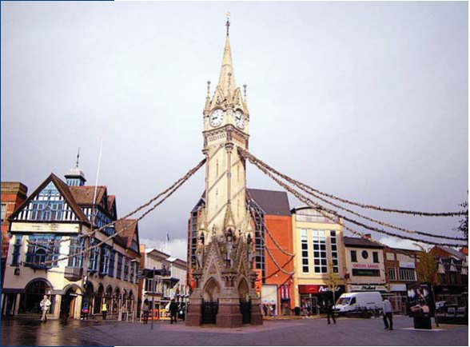
Український стоматолог в Англії
«Усмішка нічого не коштує, але дорого цінується», — сказав американський психолог і публіцист Дейл Карнегі. Чи справді це так? Можливо, ті щасливчики, які мають гарну усмішку від народження, і погодяться з цим видатним психологом. Решті ж доводиться платити за гарну усмішку, причому чималі гроші. Стоматологічні послуги — річ дорога, особливо це відчутно в західноєвропейських країнах. Найдорожчі стоматологічні послуги у Великій Британії, а професія стоматолога тут визнана однією з найпрестижніших і високооплачуваних у Європі. Це приваблює стоматологів з інших країн, особливо з Євросоюзу, оскільки їм не потрібно підтверджувати свій диплом в Англії і навіть не треба складати мовний іспит. Випускники стоматологічних вузів Німеччини, Іспанії, Португалії та інших країн Європейського Союзу, закінчивши університет, без жодного досвіду роботи у своїй країні можуть працювати стоматологами у Великій Британії, навіть не володіючи досконало англійською мовою (природно, якщо знайдуть роботу).
Але для стоматологів з країн, які не входять до Євросоюзу, ситуація зовсім інша. Їм доводиться пройти певний шлях для досягнення мети — стати стоматологом в Об'єднаному Королівстві. Шлях складний, але можливий. Ця стаття про те, як випускникам стоматологічних вузів і факультетів з України, Росії, Білорусі, Азербайджану та інших країн СНД підтвердити свій диплом і отримати роботу стоматолога у Великій Британії.
Я випускниця Української медичної стоматологічної академії, живу і працюю стоматологом в Англії. Цього року підтвердила свій диплом і отримала ліцензію на практику. У цій статті я поділюся своїм досвідом, і можливо, читач почерпне для себе щось корисне.
Екзаменаційна система: сувора, але справедлива
Живу я у Великій Британії 4 роки і за цей час зустріла багато емігрантів з України, а також країн СНД, які мають вищу освіту, в тому числі і медичну (стоматологічну), але не намагаються її підтвердити або ж відкладають на потім. Можливо, не вистачає впевненості або наполегливості. Поспілкувавшись з ними, я зрозуміла, що багато хто вважає себе недостатньо добре підготовленим для Англії (або ж той факт, що наша країна менш розвинена, занижує їхню самооцінку як фахівців). Відразу ж хочу вас переконати: наша освіта аж ніяк не гірша, ніж освіта в Англії (звичайно ж, якщо ви вчилися, а не просто відвідували університет). Випускники з країн СНД мають дуже добру підготовку, тільки тут це потрібно довести: скласти реєстраційний іспит (overseas registration exam), щоб отримати ліцензію на практику. Здавалося б, все просто і легко: один іспит — і ви фахівець! Виграш дуже великий — улюблена професія, престиж, висока зарплата... Однак іспит не такий уже й простий. Екзаменаційна система в Англії значно відрізняється від нашої. Як і сама Англія, вона сувора, але справедлива.
Що ж це за страшний іспит? Детальну інформацію можна знайти на сайті http://www.gdc-uk.org/Dentalprofessionals/ORE/Pages/Before-you-apply.aspx Тестування відбувається в Лондоні, і вимоги дуже високі. Здають цей іспит 20-25 кандидатів із сотні тих, що екзаменуються.
Для подання документів на цей іспит необхідно заповнити анкету (на сайті www.gdc-uk.org), у Вас має бути 1600 годин клінічного практичного досвіду, необхідно скласти іспит з англійської мови IELTS ( http://www.ielts.org/ ) і завірити свій диплом в NARIC (http://ecctis.co.uk /naric/).
Стоматологічний іспит складається з двох частин: 1 — теоретична (проводиться два рази на рік), 2 — практична (проводиться 5-6 разів на рік). На обидві частини дається 4 спроби. Тепер докладніше про першу частину. Вона триває два дні, це тестування на комп'ютері. Тести складаються з 300 питань, перший день — 150 загальних медичних питань (гістологія, біохімія, анатомія, фармакологія і т.д.), другий день — 150 стоматологічних питань. Щоб скласти, потрібно набрати 50%, якщо не здав одну частину, то провалив увесь іспит. Питання за структурою схожі на наш Крок, тільки англійською мовою.
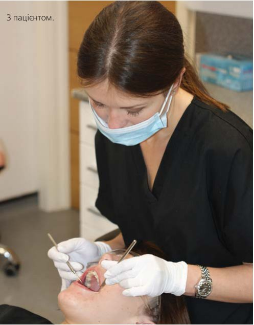
Друга частина, практична, складається з 4 подрозділів, триває три дні. День перший — 20 практичних завдань. Ця дуже популярна система тестування в англійських університетах називається OSCES. На кожне завдання відводиться 5 хвилин і 1 хвилина на те, щоб ознайомитися з ним. Ви стоїте перед зачиненими дверима, на табло написане завдання, наприклад, накласти шов, зібрати анамнез у пацієнта, виписати рецепт, написати направлення. Лунає дзвінок, ви заходите в кімнату, і у вас є 5 хвилин, щоб виконати завдання. У кімнаті можуть перебувати пацієнт (актор) і екзаменатор, може нікого не бути або лише екзаменатор. Після закінчення 5 хвилин знову лунає дзвінок, і незалежно від того, виконали ви завдання чи ні, треба переходити в наступні кімнати для виконання інших завдань.
День другий — робота на фантомі. Треба виконати 3 практичних вправи (це може бути препарування порожнин класу 1, 2, 3 і т.д., пломба, включаючи амальгаму, протезування, вініри, коронки, кореневий канал), на які у вас є 3 години. Екзаменатори можуть ставити додаткові питання.
День третій — робота з пацієнтом (актор) і невідкладні стани. На кожну частину іспиту відведено певний час, і додаткового часу ніхто не дає. Не склав одне завдання (наприклад, провалив одну вправу на фантомі ) — провалив увесь іспит. Перескладати потрібно всі 4 частини. Знову ж, усі подробиці можна знайти на сайті http://www.gdc-uk.org/ Dentalprofessionals/ORE /Pages/ORE-part-2.aspx
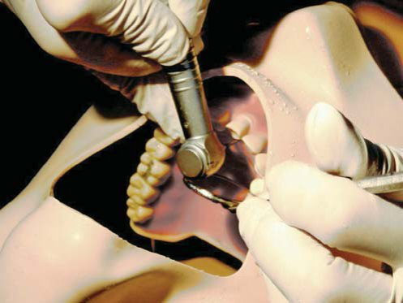
Якщо ви зайдете на цей сайт, то не знайдете жодної інформації про підготовку до іспиту, крім списку літератури та прикладів екзаменаційних питань і завдань. Насправді існує безліч курсів і груп підготовки до цього іспиту. Важливо вибрати гарні курси і зареєструватися в респектабельній групі. Можу дати рекомендації, посилаючись на свій досвід. До першої частини можна в принципі підготуватися самому, маючи добрий план підготовки. Я була на одних курсах, які мені дуже допомогли і дали гарний план, ось сайт http://karmaventures.co.uk/pretam/category/orelds/ Також чула позитивні відгуки колег про інші курси — http://www.ucl.ac.uk/eastman/ cpd/ courses/ revision/ore
Для підготовки до другої частини курси просто необхідні. Адже щоб скласти іспит, потрібно знати його структуру і техніку складання, цьому і навчать вас на курсах. Крім того, на всіх курсах наприкінці проводять симульований тест, за форматом такий самий, як іспит. Це допомагає оцінити свої знання і визначити прогалини в них, над якими потрібно працювати.
Курси для підготовки до другої частини:
http://www.rcseng.ac.uk/fds/courses/ore
http://www.ucl.ac.uk/eastman/cpd/courses/ revision/ore
Групи з підготовки, де я б рекомендувала зареєструватися: група на facebook ore1 і ore2 і друга — http://groups.yahoo.com/neo/groups /OREmutualsupport/info
І всі здають, якщо не здаються самі...
А ось і моя історія. Живу в Англії з 2009 року, рік витратила на підготовку і складання іспиту з англійської мови. Незважаючи на те, що у мене був непоганий рівень підготовки і практика, я набрала потрібний бал за п'ятою спробою. IELTS — іспит, результат якого передбачити неможливо. Але великий плюс, що його можна здавати необмежену кількість разів, і зрештою всі його здають, якщо не здаються самі.
Готуючись до іспитів, я паралельно працювала асистентом стоматолога. Цей досвід роботи, безумовно, відіграв позитивну роль. На жаль, навіть з дипломом стоматолога дуже важко отримати роботу асистента стоматолога в Англії. Куди не звернися, скрізь потрібна англійська кваліфікація. Тому мені довелося скласти іспит, щоб працювати асистентом стоматолога.
Але повернімося до іспиту зі стоматології. Я підготувала всі необхідні документи і подала в Стоматологічне управління (General Dental Council — орган, який регулює діяльність усіх стоматологів в Англії), вони ж і проводять іспити. Велика Британія — бюрократична країна, і розгляд документів займає тривалий час. Цього разу мені пощастило, мої документи розглянули швидко, протягом двох тижнів. Я отримала свій індивідуальний логін і пароль на Інтернет-сайті, де потрібно бронювати іспит. Система унікальна, такої я ще не зустрічала. Певного дня у певний час відкривається онлайн-бронювання місць на іспит. На першу частину іспиту допускаються 300 осіб, в принципі місце можна забронювати без будь-яких проблем. А ось бронювання місць на другу частину — справжній головний біль. Допускають лише 100 осіб, а забронювати намагається близько 10000, місця розходяться за 30-60 секунд. Трохи пізніше я розповім усі подробиці про другу частину, а поки що сконцентруємося на першій. Я забронювала її без будь-яких проблем. Забронювала — і була шокована: на підготовку у мене 3 місяці, я працюю 5 днів на тиждень, іспит англійською мовою, я ще навіть не купила необхідних книг. У групі з підготовки, в якій я зареєструвалася, читала відгуки людей про іспит. Він дуже серйозний, багато хто готується до нього півроку, а то й рік, при цьому проводячи 6-8 годин за книгами. Навіть у перші роки навчання в академії я стільки не сиділа над підручниками, годину-дві максимум. А тепер мені належить повторити або вивчити всі предмети (анатомію, гістологію, біохімію, мікробіологію, фармакологію і т.д.) англійською мовою. Але я вирішила спробувати, заздалегідь думаючи, що швидше за все це буде лише пробна спроба.
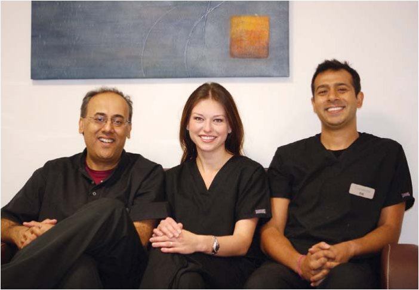
Ще цікавий момент: близько 80% тих, хто хоче скласти цей екзамен, отримали стоматологічну освіту англійською мовою, переважно це вихідці з азійських країн. Я вважала, що вони мають значну перевагу перед нами. Наступні 3 місяці я повністю сконцентрувалася на іспиті. Мій колишній бос пішов мені назустріч і дав більше вихідних, чоловік допомагав по дому, а я зайнялася серйозною підготовкою. Головне — у мене був план, і я не відступала від нього ні на крок.
Три місяці пролетіли, немов три дні. І ось я в Лондоні, в Роял Кінг Коледж, очікую біля входу в екзаменаційну кімнату. Дивно, але я була цілком спокійна. Як я згадувала раніше, іспит тривав два дні. Правила дуже жорсткі, якщо не дай Боже хтось буде помічений за списуванням або перемовляється з іншими екзаменованими, то позбавляється права складання іспиту, причому назавжди. Знову ж, результат передбачити не можна, і чекати його потрібно місяць. Коли настав довгоочікуваний день отримання результатів, я не повірила очам, відкривши свою електронну скриньку: я склала! Моїй радості не було меж.
Я була впевнена, що з другою частиною не буде жодних проблем, і вже будувала плани з приводу роботи. Але іспит призупинили на рік: міняли формат другої частини. Коли іспит відновили, я не змогла забронювати бажану дату, і мені довелося складати його на 8-му місяці вагітності. Я вважала, що це буде плюс, екзаменатори із симпатією поставляться до майбутньої мами. Як же я помилялася! Поблажливе ставлення до вагітної студентки можливе лише в нашій країні.
Стрес під час другої частини просто невимовний, особливо це відчувається на третій день іспиту. Якщо в першій частині тестують тільки знання, то в другій звертають увагу абсолютно на все: професіоналізм, уміння спілкуватися з пацієнтом, інтонацію голосу, зовнішній вигляд, жестикуляцію. Ось тут досвід роботи асистентом мені дуже допоміг. Але незважаючи на вагітність, досвід роботи в англійській клініці і старанну підготовку, я склала другу частину іспиту з другої спроби.
Склавши іспит, можете бути певні, що ви відповідаєте міжнародним стандартам. Іспити в Англії загартовують, вчать витримці і терпінню. Найпозитивніше в англійській екзаменаційній системі — усе, що вимагають на іспиті, потім на всі 100% стане у пригоді на практиці, він не містить нічого зайвого.
Після складання іспиту потрібно отримати реєстрацію у Стоматологічному управлінні, і після цього ви маєте право працювати. Процес знову ж затяжний, і у мене він зайняв два місяці. Доки чекаєте на реєстрацію, можна паралельно шукати роботу. В Англії два види стоматології: державна і приватна. Якщо після складання іспиту ви хочете працювати в державній, то для цього потрібно пройти інтернатуру (яка триває від 6 до 12 місяців залежно від попереднього досвіду), а для роботи у приватній практиці інтернатура непотрібна. Місце в інтернатурі отримати дуже важко, але знову ж таки — можливо. На мій погляд, це найправильніший шлях повернення до роботи після тривалої перерви. Інтернатура оплачувана, але платите не ви, а вам.
Багато з тих, хто складав цей іспит, кажуть, що знайти роботу після іспиту складніше, ніж скласти його. Я з цим не погоджуся, бо через два місяці після отримання реєстрації почала працювати. Проходжу інтернатуру в одній із центральних клінік в м. Лестер. У мене два чудових керівники інтернатури — доктор Рікін Джетва і доктор Санджей Чандарана, які завжди раді допомогти і надають свободу в плані клінічного вибору. Державна стоматологія в Англії на високому рівні. Клініки оснащені гарним устаткуванням і якісними матеріалами.
У середньому в державній клініці стоматолог приймає 20-25 пацієнтів на день, а у приватній 5-10. Навантаження, звичайно, дуже велике, і наприкінці робочого дня відчувається приємна втома. Але повна віддача і любов до своєї професії змітають усі сліди вчорашньої втоми, і на початку нового робочого дня відчуваєш себе сповненою енергії та нових сил.
Я люблю свою роботу і професію, як ніколи раніше. Іноді для того, щоб зрозуміти, що для тебе становить цінність, це потрібно втратити і знову знайти. Я воістину знайшла себе як стоматолог лише через 8 років після закінчення академії.
Наша школа стоматології дає міцний фундамент. Я вдячна своїй альма-матер — Українській медичній стоматологічній академії — і її викладачам, які дали нам гарну базу знань і практичні навички.
Якщо хтось із вас планує, хотів би спробувати свої сили в англійській стоматології, бажаю наполегливості, терпіння і працьовитості. Це цілком можливо. З радістю відповім на ваші запитання. Ви їх можете задати на моєму блозі: http://lifeafterore.wordpress.com/
Ольга Вородюхіна,
м. Лестер, Великобританія.
У стоматології немає кордонів, це один великий і різноманітний світ
Dobry den! Так вітаються в Чеській Республіці. «Prosim» — це чеське «чарівне слово». Ось вам і перший урок чеської мови. Яка ж вона, Чехія, і що приваблює в ній наших стоматологів? Невеликий екскурс по Чехії допоможе краще уявити, на який ґрунт потрапляють лікарі-стоматологи з країн колишнього Радянського Союзу і яким чином їм вдається вкорінитися. Можливо, у цьому головна роль належить «благодатній землі», а може, наші лікарі, загартовані в екстремальних умовах, проростають, вплітаються в місцеву систему, укорінюючись на чужій землі?
Чи чекають нас тут із розкритими обіймами, як у травні 1945 року? Чехи, на жаль, російського громадянина асоціюють з окупантом, згадуючи 1968 рік. Українці в їхньому уявленні — працьовита і дешева робоча сила: чоловіки на будівництві, жінки — прибиральниці.
Чехи менше знають нашу інтелігенцію та її внесок у світову культуру. Але це обмежене уявлення про українську націю змінюється на краще, передусім завдяки українським письменникам, книги яких у перекладах чеською активно видаються в останні роки. Нещодавно видана, наприклад, 878-сторінкова (!) антологія прози сучасних українських письменників. А остання новинка — «Музей покинутих секретів» Оксани Забужко. Чехи і українська діаспора зустрічалися з багатьма діячами української культури. Це Іван Драч, Дмитро Павличко, Оксана Забужко, Юрій Андрухович, Сергій Жадан, Тарас Прохасько, професор Григорій Грабович із США, директор Інституту літератури Микола Жулинський, прогресивні українські політики... Будувати мости взаєморозуміння, поваги і співпраці між двома європейськими народами допомагає Асоціація україністів Чеської Республіки.* Дуже активний Союз українців Богемії (Карлові Вари), який очолює полтавець, к.і.н. Владислав Роговий.
Я впевнена, що стоматологи-іммігранти також допоможуть сформувати позитивну думку у чеського народу. Адже пацієнти вибирають нас, лікарів з України, Росії, Білорусі, Казахстану...
Отже, Чехія — країна невелика, площею 78867 км2, з населенням 10,5 млн. чоловік. Чехія — член Європейського Союзу і частина Шенгенського простору. Чеська Республіка проголошена парламентською демократичною державою, заснованою на вільній боротьбі політичних партій і рухів. Главою держави є президент, якого минулого року вперше обрали всенародним голосуванням. Законодавча влада належить парламентові і сенатові. На відміну від країн СНД, у Чехії мала нерівність між найбагатшими і найбіднішими. Рівень безробіття невисокий, на рівні розвинутих країн. Чехія багата історичними та природними пам'ятками. Серед іммігрантів найчисельнішу діаспору становлять громадяни України, на четвертому місці — громадяни Росії.
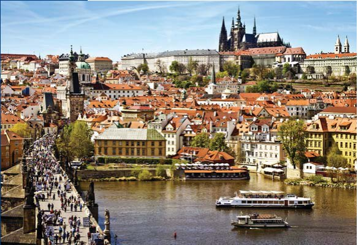
У Чеській Республіці давно і стабільно діє система загального медичного страхування. Згідно із законом і як само собою зрозуміле, кожен зобов'язаний брати участь у страховій системі. Інший стрижень загального медичного страхування — принцип соціальної солідарності. Солідарність проявляється на рівні багатих і бідних, коли громадяни з високими доходами вносять кошти на медобслуговування громадян з доходами низькими. Ще один рівень солідарності — здорових і хворих, де здоровий громадянин черпає менше коштів, ніж громадянин хворий. Сама, не з чуток, а як пацієнт знаю, як приємно відвідувати лікарів, проходити обстеження різної складності, одержувати лікування, в тому числі хірургічне, і при цьому не відчувати страху через непідйомну вартість. Лікування в основному оплачує страхова компанія. Однак у стоматології це працює погано. Кожен пацієнт бажає якісного, сучасного лікування зубів, а страхова компанія здатна оплатити лише пломбу з амальгами, лікування пульпіту і періодонтиту ручним способом, пломбування кореневого каналу методом одиночного штифта. Звичайно, якщо добре постаратися, можна і таким способом добитися успіху. Але лікар, знаючи, скільки йому страхова компанія за це заплатить, рівно настільки і зробить цю роботу. Найдовше перебування у лікаря за страховкою триває 30 хвилин. І потім, психологія людини така, що, не заплативши за роботу, вона її і не цінує. Мало того, людина не замислюється, як зберегти здоров'я зубів, запобігти захворюванню. Тому що завтра вона може знову піти і безплатно одержати лікування. Так і ходить пацієнт до лікаря з одним і тим же зубом кілька разів, доки зуб не буде видалений.
На курсах з підготовки до іспитів одна викладачка, котра читала дуже пізнавальні лекції на тему ускладнень у стоматологічній практиці, докоряючи нам, казала: пломби ви робите гарні, але головне — уміти впоратися з ускладненнями: запаленням кісток щелепи і м'яких тканин. Я тоді ще не могла добре говорити чеською, а так хотілося посперечатися, що найважливіше — не допустити цих запалень, а це означає, що якісна реставрація і є запобіганням ускладнень. Уже тоді мені стало зрозуміло, як зазвичай вирішуються стоматологічні проблеми в країні: шляхом «гасіння пожеж», не пошуком причини, а ліквідацією наслідків, які супроводжуються болем, набряком і т.п. Там же, на курсах, я вперше почула професора Мазанека, який пізніше приймав у мене іспит. Уже кілька років він голова екзаменаційної комісії для лікарів-іммігрантів. На сторінках газети «Охорона здоров'я і медицина» він розмірковує про проблеми у стоматології Чеської Республіки; це людина, котра вболіває за свою справу і постійно в пошуку вирішення сучасних завдань у сфері доступності стоматологічної допомоги, а також підвищення рівня підготовки фахівців і зростання кваліфікації лікарів-практиків.
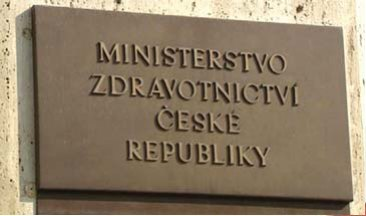
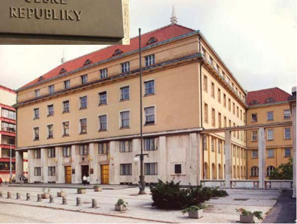
Ми, лікарі, які отримали диплом не в країнах Європейського Союзу, не маємо права працювати за фахом, доки не зробимо нострифікацію свого диплома. Нострифікація — це встановлення еквівалентності і наявності законної сили документів іноземних держав про вищу освіту з видачею відповідного сертифіката. Цей сертифікат ще не дає права працювати на території Чеської Республіки. Такий дозвіл видає Міністерство охорони здоров'я. Для цього пропонується скласти іспит з чотирьох частин. Перша і друга частини у вигляді письмових тестів, які можна складати чеською, англійською, французькою, німецькою або російською мовами. Перша оцінює знання з усіх розділів стоматології, друга — знання системи охорони здоров'я та основ права у сфері надання медичної допомоги у Чеській Республіці.
Третя частина — практична: лікар працює під професійним наглядом протягом п'яти місяців. Цей період для мене був найважчим. Доводилося відмовлятися від усього, що не було пов'язане з підготовкою до іспиту. П'ять місяців — короткий термін, кожного дня потрібно встигнути відпрацювати встановлений робочий час, сорок одну годину на тиждень, а після роботи знайти силу волі читати підручники, писати конспекти, слухати аудіолекції, тренуватися вголос відповідати чеською мовою, наклавши вето на всі спокуси життя. Та й зарплата під час практики не дозволяє дуже «розгулятися», вистачає лише на оренду житла та скромне харчування. Перед екзаменаційною комісією повинні бути представлені і гідно захищені п'ять клінічних випадків з вашої п'ятимісячної передекзаменаційної практики.
Четверта частина — заключна, це усний іспит, де витягується білет з кожного розділу стоматології: терапевтична стоматологія, хірургічна, ортопедична, дитяча та ортодонтія, пародонтологія і хвороби слизової оболонки рота. Лікар, який успішно пройшов її, отримує дозвіл працювати на чеській землі, а через три роки роботи — і на території усього Європейського Союзу. Природно, велику роль відіграє обсяг і глибина теоретичних знань. А головне — уміння їх донести екзаменаторові, маючи лише елементарні знання мови. Головним чином вимагається володіння спеціальною термінологією.
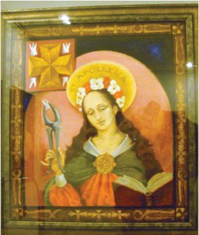
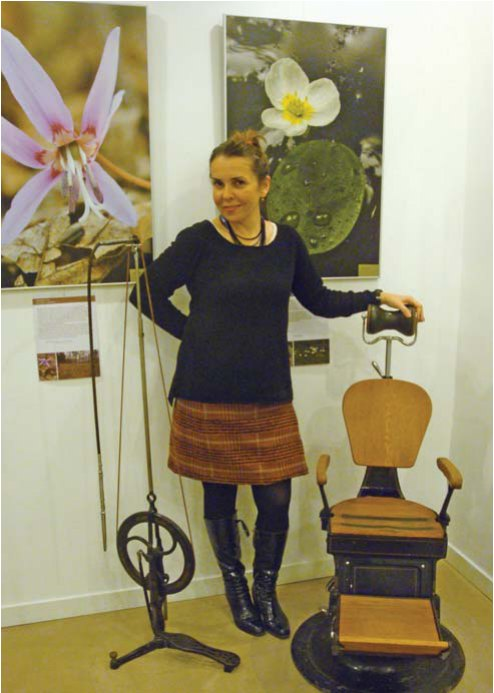
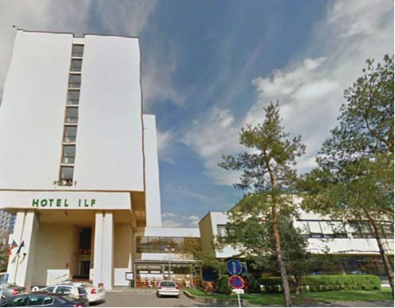
В екзаменаційній комісії найчастіше беруть участь лікарі та викладачі старого гарту, які ще дотримуються клятви Гіппократа і для яких пацієнт залишається передусім пацієнтом, а не клієнтом. Багато з екзаменаторів відомі своїми науковими працями, є авторами підручників для стоматологічних факультетів. З одного боку, обстановка на іспиті неформальна, спілкування йде на рівних, як колега з колегою, а з іншого — вимоги дуже суворі і з кожним роком складати іспит стає важче. Одне слово, іспит дуже серйозний, і до його підготовки підхід має бути відповідний. Принцип «за гроші можна купити все» у цьому випадку не працює. Допомогти може тільки «пані удача». Звичайно, без грошей не обійтися, адже за все потрібно платити: за переклади документів чеською, за подачу заяви, за кожний іспит, причому за наступні спроби сума збільшується. А ще — за помешкання та підготовчі курси.
Мені пощастило успішно скласти іспит з першої спроби. Другий удачею було запрошення на роботу за зеленою картою, що дало мені право на проживання у Чеській Республіці. Незважаючи на удачі і успіхи, життя лікарів-іммігрантів сповнене перешкод. Якось побачила в одного друга висловлювання у скайпі: «Ти майстер у тому, що пережив, ремісник у тому, що переживаєш, і дилетант у тому, що на тебе чекає», і відтоді воно допомагає мені долати труднощі і нічого не боятися.
Тепер про те, як складала іспити, можу розповідати з гумором, а тоді, рік тому, я, лікар з багаторічним стажем, немов першокурсниця, прийшла на іспит за дві години до його початку, а перед цим радилася з подругою по скайпу, як краще одягнутися. А взявши білет у руки, ні хвилини не готуючись, підкорила екзаменаторів — єдина в той день з п'яти претендентів.
У іммігранта завжди однією з головних проблем є мова тієї країни, в якій він живе. Чим краще знання мови, тим швидше прийде успіх. Спочатку зрозуміти взагалі нічого неможливо. Потім знаходиш багато слів, які розумієш, і стає весело. Літак — «letadlo», ступні ніг — «chodidla», тертка для овочів — «struhadlo», лінійка для вимірювання — «meritko» і т.д. Тепер ця мова мені дуже симпатична, з цікавістю її вивчаю, і чим більше знаю, тим більше в ній знаходжу спорідненого з українською та російською. Приміром, ось у чеській і російській мові є слово «родина», і значення цього слова в обох мовах найвище. У росіян це місце народження, а у чехів, як і українців, — це «сім'я». Подобається мені, як вони кажуть, що жінка вагітна або має дитину з чоловіком, а не від чоловіка, немовби заразилася хворобою.
А ось мова стоматологів скрізь однакова. Сучасні стоматологи широко обмінюються своїми знаннями та досвідом. У стоматології немає меж, це один великий і різноманітний світ, зі спільними інтересами і завданнями. І не так важливо, в якій країні ти живеш, якою мовою говориш, головне — це те, як ти ставишся до своєї справи. Найцінніше — це не втратити повагу в очах своїх пацієнтів і колег. «Не місце прикрашає людину, а людина місце».
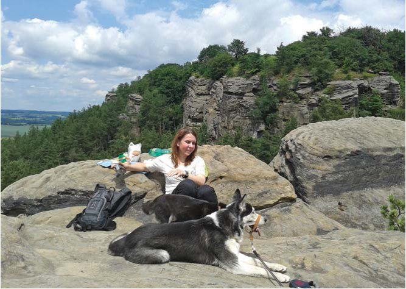
Наталія Аврамова,
м. Млада-Болеслав, Чехія.